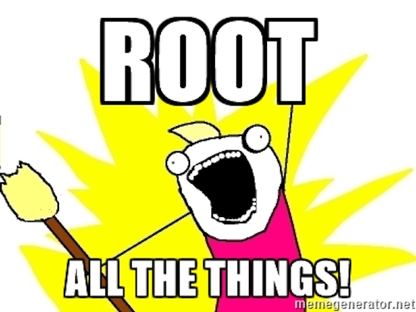

Showoff Menu
Close
Press ? for help.
All features are anonymous
Press ? for help.
All features are anonymous
Gratuitous scary hackerrrrr just because. Everyone's got to have this oh-so-accurate graphical depiction of security vulnerabilities, right?
Everyone's got to have this oh-so-accurate graphical depiction of security vulnerabilities, right?


You all know this because you're here, but bear with me a moment.
You all know this because you're here, but bear with me a moment.
package { 'cowsay':
ensure => present,
provider => gem,
}cowsay -f bud-frogs "Elementary, my dear Watson"root...

class profile::wordpress {
include profile::apache
apache::vhost { $::fqdn:
port => '80',
docroot => '/opt/wordpress',
}
class { 'profile::mysql::server':
root_password => 'PrVVX2pq*8rkd',
}
class { '::wordpress':
db_user => 'wordpress',
db_password => 'pwd{94wqUDde',
}
}ssh root@master puppet bucket grep PrVVX
say watdhgwilliam/bucket_face Forge module.The centralized filebucket service is disabled by default in
recent PE releases, but the same service is used by the new static compiler
option, in which case all managed files exist in the filebucket store.
You could get similar results by just grepping the filebucket directory.
root@master:~ # cd /opt/puppetlabs/server/data/puppetserver/bucket
root@master:/opt/puppetlabs/server/data/puppetserver/bucket # grep -rn PrVVX *
d/5/2/2/2/6/9/b/d522269bdb72bf2769da20ea563b2103/contents:6:password='PrVVX2pq*8rkd'
d/5/2/2/2/6/9/b/d522269bdb72bf2769da20ea563b2103/contents:12:password='PrVVX2pq*8rkd'
d/5/2/2/2/6/9/b/d522269bdb72bf2769da20ea563b2103/contents:18:password='PrVVX2pq*8rkd'
d/5/2/2/2/6/9/b/d522269bdb72bf2769da20ea563b2103/contents:24:password='PrVVX2pq*8rkd'
d/5/2/2/2/6/9/b/d522269bdb72bf2769da20ea563b2103/contents:30:password='PrVVX2pq*8rkd'Results:
d522269bdb72bf2769da20ea563b2103 2016-05-01 09:27 /root/.my.cnf:
password='PrVVX2pq*8rkd'
password='PrVVX2pq*8rkd'
password='PrVVX2pq*8rkd'
password='PrVVX2pq*8rkd'
password='PrVVX2pq*8rkd'You could get similar results by just grepping the filebucket directory.
root@master:~ # cd /opt/puppetlabs/server/data/puppetserver/bucket
root@master:/opt/puppetlabs/server/data/puppetserver/bucket # grep -rn PrVVX *
d/5/2/2/2/6/9/b/d522269bdb72bf2769da20ea563b2103/contents:6:password='PrVVX2pq*8rkd'
d/5/2/2/2/6/9/b/d522269bdb72bf2769da20ea563b2103/contents:12:password='PrVVX2pq*8rkd'
d/5/2/2/2/6/9/b/d522269bdb72bf2769da20ea563b2103/contents:18:password='PrVVX2pq*8rkd'
d/5/2/2/2/6/9/b/d522269bdb72bf2769da20ea563b2103/contents:24:password='PrVVX2pq*8rkd'
d/5/2/2/2/6/9/b/d522269bdb72bf2769da20ea563b2103/contents:30:password='PrVVX2pq*8rkd'ssh root@demo 'python -m json.tool $(puppet agent --configprint client_datadir)/catalog/demo.puppetlabs.vm.json | grep -n2 PrVVX'
say wat
Results:
4545- \"line\": 8,
4546- \"parameters\": {
4547: \"root_password\": \"PrVVX2pq*8rkd\"
4548- },
4549- \"tags\": [
--
4601- \"restart\": false,
4602- \"root_group\": \"root\",
4603: \"root_password\": \"PrVVX2pq*8rkd\",
4604- \"service_enabled\": true,
4605- \"service_manage\": true,
--
5011- \"parameters\": {
5012- \"backup\": false,
5013: \"content\": \"### MANAGED BY PUPPET ###\n\n\n[mysql]\nuser=root\nhost=localhost\npassword='PrVVX2pq*8rkd'\nsocket=/var/lib/mysql/mysql.sock\n\n[client]\nuser=root\nhost=localhost\npassword='PrVVX2pq*8rkd'\nsocket=/var/lib/mysql/mysql.sock\n\n[mysqldump]\nuser=root\nhost=localhost\npassword='PrVVX2pq*8rkd'\nsocket=/var/lib/mysql/mysql.sock\n\n[mysqladmin]\nuser=root\nhost=localhost\npassword='PrVVX2pq*8rkd'\nsocket=/var/lib/mysql/mysql.sock\n\n[mysqlcheck]\nuser=root\nhost=localhost\npassword='PrVVX2pq*8rkd'\nsocket=/var/lib/mysql/mysql.sock\n\n\",
5014- \"mode\": \"0600\",
5015- \"owner\": \"root\",# OS X doesn't do .pem anymore, since OpenSSL has been deprecated
CERT=_files/ssl/cert.p12:boo
CA=_files/ssl/certs/ca.pem
SSL="--tlsv1 --cacert ${CA} --cert ${CERT}"
PDB=https://master.puppetlabs.vm:8081/pdb/query/v4/catalogs/
URL="${PDB}/demo.puppetlabs.vm"
curl ${URL} ${SSL} | python -m json.tool | grep PrVVX
say watResults:
"root_password": "PrVVX2pq*8rkd",
"root_password": "PrVVX2pq*8rkd"
"content": "### MANAGED BY PUPPET ###\n\n\n[mysql]\nuser=root\nhost=localhost\npassword='PrVVX2pq*8rkd'\nsocket=/var/lib/mysql/mysql.sock\n\n[client]\nuser=root\nhost=localhost\npassword='PrVVX2pq*8rkd'\nsocket=/var/lib/mysql/mysql.sock\n\n[mysqldump]\nuser=root\nhost=localhost\npassword='PrVVX2pq*8rkd'\nsocket=/var/lib/mysql/mysql.sock\n\n[mysqladmin]\nuser=root\nhost=localhost\npassword='PrVVX2pq*8rkd'\nsocket=/var/lib/mysql/mysql.sock\n\n[mysqlcheck]\nuser=root\nhost=localhost\npassword='PrVVX2pq*8rkd'\nsocket=/var/lib/mysql/mysql.sock\n\n",show_diff.show_diff setting will allow you to see all file changes Puppet makes.ssh root@demo "puppet apply -e 'include demo::diffs' --show_diff"
say watshow_diff.ssh root@demo "puppet apply -e 'include demo::reset'"

End-to-end security is hard. And even when it's possible to achieve, it's often quite inconvenient to the end-user.
We'll come back to this in a few. Puppet's already done some bootstrapping, remember?

It's no real surprise that the top hit for that Google search explains how to
use SSLPassPhraseDialog to save the passphrase in a plain-text script.
Most certificate providers these days will sell you a non-encrypted certificate that does not require a passphrase to use it.

And remember: sensitive Puppet files are admin-only readable by default.

# /etc/puppetlabs/puppet/puppet.conf
[agent]
postrun_command = rm $client_datadir/catalog/$certname.json
...
Remember if needed, you can retrieve the value of any Puppet setting using --configprint:
$(puppet agent --configprint client_datadir)$(puppet agent --configprint certname)https://docs.puppet.com/puppet/latest/reference/configuration.html#postruncommand
filebucket
show_diff
I don't actually recommend avoiding filebucket, if you find it useful. The Master should be highly secure, so this isn't any worse than having your codebase on disk.
show_diff for sensitive filesfile { '/etc/motd':
ensure => file,
content => "changes!!1!\n",
}
file { '/etc/something_secret':
ensure => file,
content => 'hunter2',
show_diff => false,
}root@demo:~ # puppet apply files.pp
Notice: Compiled catalog for demo.puppetlabs.vm in environment production in 0.09 seconds
Notice: /Stage[main]/Main/File[/etc/motd]/content:
--- /etc/motd 2016-04-30 15:23:25.016930682 +0000
+++ /tmp/puppet-file20160430-32415-x8gei 2016-04-30 20:23:00.596929656 +0000
@@ -1 +1 @@
-wut wut
+changes!!1!
Notice: /Stage[main]/Main/File[/etc/motd]/content: content changed '{md5}ec1dc85fc50a40805611f8e0b2413dda' to '{md5}ad3453fe26ac24cbccd3e76cb51a9c51'
Notice: Applied catalog in 0.28 seconds
binford2k/node_encrypt
{
"type": "Node_encrypted_file",
"title": "/var/www/sites/default/sites.php",
"tags": ["node_encrypted_file", "node_encrypt::file", "node_encrypt", "file", "node", "default", "class"],
"file": "/etc/puppetlabs/code/environments/production/modules/node_encrypt/manifests/file.pp",
"line": 66,
"exported": false,
"parameters": {
"content": "-----BEGIN PKCS7-----
MIIMlQYJKoZIhvcNAQcDoIIMhjCCDIICAQAxggJ5MIICdQIBADBfMFoxWDBWBgNV
BAMMT1B1cHBldCBDQSBnZW5lcmF0ZWQgb24gcHVwcGV0ZmFjdG9yeS5wdXBwZXRs
YWJzLnZtIGF0IDIwMTUtMTItMTEgMDE6MTk6MzYgKzAwMDACAQIwCwYJKoZIhvcN
AQEBBIICADGhLbgBfodWjA6S+rzNfkTNLP+aGkwjGXQH5vSGpBm/z5bg+18+1vCZ
+L+wrsE8P/5ZGuK9sXXV//IKcuu2Shn+rkW32/kqPVab4yNnWZUjaqbdGdnEI46F
6N44XQWOxbu7nTg9yCaUTdrDhVNtdYl+YrCDQiMsUjsJ+no78/y7IYqbWuwN70hx
OdqYSvZ2Fkww2nqiRBpSWXvja6ONw3025vywBT1WNEDPNYEL+mPSq17gC9yDpr+I
409+g/uD/j8q5YtABpf4d9CVhsDy/5E3T9O28ruR/Ow4lA2EDGsyu7tYKAMiYNU6
XjEkyiqRNNTil49T73cyZGloPtBevHOREee/DE/u9oZw+aMQS3o4TCA+ubRSuRKF
kgSgathI4gC/C2E57GBQfreuSi4umKTF/kKYfaGoj6zba/nwSU/8pQqYT86M7pP9
4HRy9S1tlcjAuXKFffB+P52Bdz2Dv7uc4s5sJfkvIR1T0dgtiUl+X8HWsDWJ3cYJ
t5+TpqDLkjREVis/vuG3+mX2XgeQvNkGucTAuB9iS0XLZINYnIBE04fPGezi36V3
VJm4rnOa2AIVc1MbT7khkRaKbO1MXSqGHTyv2zbLTwfQFpRPdzW/fouxxVcZoA5w
HLHacKMRYxCQnFwbVlrgO2cWhH89UM6dFlX4nkA3m6vW65+/yWA4MIIJ/gYJKoZI
hvcNAQcBMB0GCWCGSAFlAwQBBAQQt4G22wVoZW9HXytCTJ68+YCCCdAbEe+ytJM9
m59oGAX8//I6Py4DaGL8ECN0yfP3MBVxZ0pISKqGaKLxYdsXRU6HBQx895/9Z0Qh
jB86siqv+iXEMoPLpKM90RfUNzyT275Ua/SHRn8DCLTHMj+SvHTpKUe7bv+WPXMV
...
file type.node_encrypt::file resource type.file resources:#file { '/tmp/foo':
# owner => 'root',
# group => 'root',
# content => 'This string WOULD BE in the catalog.',
#}
# Port to secure file wrapper.
node_encrypt::file { '/tmp/foo':
owner => 'root',
group => 'root',
content => 'This string will never appear in the catalog.',
}Secure content is encrypted in the catalog, and is scrubbed from reports and file diffs. However, it will still appear in backed up files.
node_encrypt::file resource type.Set up by causing a divergence:
ssh root@demo "echo changes > /tmp/foo"ssh root@demo puppet agent -tssh root@demo 'python -m json.tool $(puppet agent --configprint client_datadir)/catalog/demo.puppetlabs.vm.json | grep -n2 "will never appear"'
say wahoossh root@demo cat /tmp/fooResults:
root@demo:~ # puppet agent -t
Info: Using configured environment 'production'
Info: Retrieving pluginfacts
Info: Retrieving plugin
Info: Loading facts
Info: Caching catalog for demo.puppetlabs.vm
Info: Applying configuration version '1462176716'
Notice: /Stage[main]/Main/Node[demo.puppetlabs.vm]/Node_encrypt::File[/tmp/foo]/Node_encrypted_file[/tmp/foo]/content: content changed '<<encrypted>>' to '<<encrypted>>'
Notice: Applied catalog in 1.39 secondspuppet node decrypt command.exec { 'set service passphrase':
command => 'some-service --set-passphrase="$(puppet node decrypt --env SECRET)"',
path => '/opt/puppetlabs/bin:/usr/bin',
environment => "SECRET=${node_encrypt('and your father smelt of elderberries')}",
}exec resources.puppet node decrypt command.See the environment variable:
ssh root@demo 'echo $SECRET'See the decrypted text:
ssh root@demo puppet node decrypt --env SECRETEncrypt some text on the Master:
ssh root@master 'puppet node encrypt -t demo.puppetlabs.vm "and your father smelt of elderberries"'Results:
root@demo:~ # echo $SECRET
-----BEGIN PKCS7----- MIIMnAYJKoZIhvcNAQcDoIIMjTCCDIkCAQAxggJ0MIICcAIBADBYMFMxUTBPBgNV BAMMSFB1cHBldCBDQSBnZW5lcmF0ZWQgb24gbWFzdGVyLnB1cHBldGxhYnMudm0g YXQgMjAxNi0wNC0wNiAxOTo1NzoyNyArMDAwMAIBCjANBgkqhkiG9w0BAQEFAASC AgBnLpjDs56BvZ2SDOmMcooXCn9JcWSCWRcCH3Mh6hWsndVf6bSzLY6alJ2x0UQj UQRfylgZbV3l7O7nC6B7VZsMNyyJJjgNxX6eSiIQ3orwjIz9pnnVlJAyjoSpmMix Xd04+OXDXh3zTRdg1bK4mE3mXyN93RShjROJIhVjO/Eibr/zxqF4pA7tYByueuCf FDSuJz9dzQTRLTrLSTVK/NkiDPDTxoJc/kq0PrYY6EiBVdyILBbpca4Ocv0OP2Rc s+FTvM/M6Ehw2Bdg+GGgXw7CZaiiGwxqv/6/pxZJh36zaK4AhG0hqz5km3+HS5K8 J94K+l0MtRnntoD5SQG+fGcQoyH1If61UfoihMMPw0xY2WJruU9A1gmu3Lzb3Cra ZQqxszvJz5PlgjR76FvhEgYW+SQ4lXzNvQt2ZqmWOtm+ulx7GIvHQJ1cjsppcVoH 4JQ3+Qn+U6+GhZ5BpiYicRaGNassov/vH6C0LHHTdOYuVquoKYBRi5CF3baL9DHb GW0KYhfdIrLofDEbrDSP6uLTpWVL1Xe6FMioDsu8wc+9Xt15fNvFsKTKCBJ+2Ip+ kagn8vW+E9vugLX+Rx5EWD3HFwbD8xK3POVniUfICjxku8jwVHtDmbAapouSMDzZ KK2k2YNlZzjcs2kMTTy1OelCNqaCByKUihz6Kd/rtYCMezCCCgoGCSqGSIb3DQEH ATAdBglghkgBZQMEAQQEEMMX+585GqSTNsRKUuAGpWGAggncs6iYKudd5kED2zjt qoxTZN2LK9J5ADOmtJTTZ4hkC6H3rMIUUUd/78sipHp3b6dhG0uNsldB3Ph3ZFW5 GrE3fYAZ4hXHpvjBmtJNu6Pbp45skfIrGBy44dODof372QWzEs68X7CI2OVireVJ LOoBQShOnG8yni8exDi6k0YEucP29/5XVNhwMsEN5NX1aHuUrMjfDzqyXrkvQgCg 5gZl+xxFRxaI7vnAWy6NwAXkSTOGMji9aWL45VIBiGkY2zJC9HQiQwQ9YBcxy3/Z P5iGGVCXb7nmMhsLjThpSvhEQoHk6UrWIberHspPbr6o9pZMWkwB563w5W80iJrR TjZhAbJbcZKvkYjWQSoVRYpX87kCmDACk5AJ4sEDKSM0rg5zcQPwtvW3RbBGLP2v ElnxVlVQ8OK1/cUdHa06DnAELw7JtH2K3ClO9ZI7t/x5eas5rUJ0/aRy5NgfTp2R Vcbtv6iUF3LHcJWBT4DdkyTGXKUE+xvL7pm7FFrWQbqtqPks8+qXBWYfuReqYxfQ J0tJXUDBrEeO2J3VpMnGkyI/nkzkwUrQnvdvyE6sn8RnvA6XUDk8YBzCqqEJb0pX aua4c47L7okUIjaED8EL+GpKO6GtqImsIHGnfi5FBfQAGnlIK9EmSZ+AirrqXTeS uTvYNxRZX44PUhZy2ft+/Wq+CBba81n/E1tQFGF9YRjBi/an4mHi0KnXorCW8vwz BHpPR0vEaAyfot+OczqosbDIb71oP3OJiSNYgQ1y2VZjJ7qYKHzVDvNmn9RgKWZX bKx7Nc9QbQP5sdZYqN+3tres95vwnanP5HRPJHrBv44xoy6egGvwvrMoS+xwCvLM g++68xf0380Jooh0EG3IAKGnA64Jreo/FGgMTYQZJ+fu7Whd0JPSJv1+dKQ2galp 3aMI5UZymVN9hXzP+Vecq8ASi+ZayyUMxbHvFM980DCXGl7X+0RvDjVNO3ZrFlKW 19TRVQDuhT4N3a3+sQ5lSgvCVb1iYBqFpuAtSUM+XOjlpUuKvuz5WRxXLJOmg88k CoDuDxN5ANW0IyNj2kIp2HphN9Mok3CTnFY99MMgSnVYUyzAnb2sI0Axr5KIbLfT e4EXzVeuOViuDiEwHTVB4kMjte/9tYAX61i8A6vbh7oDHxHSCf2NfUqQ/8oDcXYT nNC6RC7u0H/rfgCl5EFyOuQbfKWZTSOBAR4iJX9/p3KGK9iA1FHqv+0M6GXex5tX xlwFtO1zygZdoPqg5jJwH1OtPWZj6lGmNXw0uX4kebK37E0T1bF0Ecvk1X2ycl4h uFTIMPpVY+GEziuUSUnCv9X7RsHDZZDK+Ezbovk9GaD1ZTD47lwmFlEtiovx7dOT eGbvBgrL0VdX8Qop13qTft/7hv2Hh6vd9Zg5gtBltT+WM+OnpO57X2lJv1hDkUby /TnVaRYjg3HXm87yg5s88tlOg5Mt1djFpe4864i2S1oOINwtCjiotYo7B2X9Se9S W/c7YsVAZoRa9RAHh8TCg2jbZtOcaQSO87jZ6xb33OHcGq9C4+7h01KcHe5CPZi7 8MUysnhVpNDiEybDXLvhK4qfzAMqIDwJ65ILpx3P3f9JChCvtZKCUJQswbaCT6cA KB+nd5ru67+y/1xyTuO3l8K3Th9oNpT3phInBlB7d65a+6stHHwVhbDvaCQrEd2R kVfvVV6aatxdg2mBy6E+sh4abzEgQ5A8vQ7nnwiRuehfTTRybZeFP0Zht9ulXNqq 8bwcecyvIfsW6QLX2zmIHRSS4X8NPHofMDD93cTL5u56+2LW34VX4T1v3ulxiq1O rCahAv6KW1lfWmFbeAH98sA8vEkTM7pAvcosbeuj1I5AUpok4uy8S31FKQsjNpjq 5dGXIV9j5NPrCj2alZfjMimXC5VG75jlLyqEbyLIPMdgV4lN6wC1se8RyXZkNhgk yevnMZppHVN7MvLJGN2DdsibrV2I79i+rlQ7gAd3PLrOOfx92PDl2M3/VlxYfzgk wMVKcOQJAq5MAp4O0p2cByDpg2KYQl3Te9wJFK4w6KBBHJ22P7mXj50l06rSw++o vFg/QWa8nGGtjWmj8xUj0mFRrJBkcPBNO7XNZ5MtDNuwNXJva0Fdj/PG4c7leMsV EXNB1CziGOUF/+uG6JCdv8f+sRVWSWRSzBhRehkW4TXr2YRjiJrNdKes3OFoGseq nj2MV8UnOJ9L6nPcyl6cI9rygi/+H71Am1wWejztDttcjs8EtDkqyTGfBnHyXZJa jwMxejfLsibQ92st6aPwhRrXLPYVaU1aez50m9qZfPblJXsZZmyXT82fR/JjChZ6 jdgRb8EcvWKQztPPrOF2uePabY1kGEYtCSfEuXi2udl4MAajNMRs/X1EMAgCEWUB zijbBgafWsltFOZ62icC6rvTrIf6zinyruQ3QqyEDVcw4ZNSwxFOYxUXMsH8dQE4 625lE1GFpOe3MVQaiNZDNjBXbBSZPaG0bIwaPS34lEG3RzeqvkK4EhYhQDZV34jK 0kjqxYnteWk7V/KDv2xPcD61COCJ3zy58CCTG3Mn+P4obx/W2XZP6QzSM7TSEu0+ /av9HZWVqVMNMIFCqnLLbnXAdmSm7iRuyhd3M22nCnhPh2o4BTBVFsBkw/4jXBUz hyGHQj1x2DP3gBspvDogdqXNdrusX7QlyKi0d+WWf1b2vBlVfATuv4CufRAjtS8R rbIuhRhBkOtF6JTh5BCgxz9O9k2BeBdJtFFQ4048l5nu+yivJqPAOEMJvrnzhd6s EoG03BrBiCMQhFMN3e50W416plow13CRVeXtM9BQGZL1rUo9H42zND1Bz0zB2o5H ciY194vNn9ZyEt3T52WeTVlHwtwIJga1KI3IX+odMzYsOc1zbV/iwrvOk8epXMpr vUylKsfuHQenUYav5uNEK9QBeY3FmiYxSt/KKicjbTd4w3oawwb/ourvo9RJbWoT +WZiNfwtLsLNEJquz4Tx6R+GGOG3cwAcc43vlfJlhUToO3GcGDLkgXEXcIL143HI YBaLpo6P+OWmulst4doLy+yNphidMVukikZLvTeuaRwEw+cS1dsD4cSZBthYFsZB XZDQ8DIrXfHdkDz4RFxp79+ceiBh7KnXC9fWj4UOcMNmgbJScmysvcNMxpXKEK3f QhUKNEd6coGA/w/98oKPLid6CKrjTVTuC5i9/yu0Sf4pt2jIGFyZkAkO3d/SwqU2 Ng4UmtO21bpM6RCjJTbY9+WrNZRQeESqVNu5wSHViiQiNhT3Nzn6ljBELQshl/4A mQjJfvGMOhaqosIAfX3MPm9k1dMarNaXChQHIcirqzgt0+3cbD1epiO4z/V9/W/R zuiTIT+leFdYCcoDOIy4yg== -----END PKCS7-----
root@demo:~ # puppet node decrypt --env SECRET
and your father smelt of elderberriesroot@master:~ # puppet node encrypt -t demo.puppetlabs.vm 'and your father smelt of elderberries'
-----BEGIN PKCS7-----
MIIMnAYJKoZIhvcNAQcDoIIMjTCCDIkCAQAxggJ0MIICcAIBADBYMFMxUTBPBgNV
BAMMSFB1cHBldCBDQSBnZW5lcmF0ZWQgb24gbWFzdGVyLnB1cHBldGxhYnMudm0g
YXQgMjAxNi0wNC0wNiAxOTo1NzoyNyArMDAwMAIBCjANBgkqhkiG9w0BAQEFAASC
AgBnLpjDs56BvZ2SDOmMcooXCn9JcWSCWRcCH3Mh6hWsndVf6bSzLY6alJ2x0UQj
UQRfylgZbV3l7O7nC6B7VZsMNyyJJjgNxX6eSiIQ3orwjIz9pnnVlJAyjoSpmMix
Xd04+OXDXh3zTRdg1bK4mE3mXyN93RShjROJIhVjO/Eibr/zxqF4pA7tYByueuCf
FDSuJz9dzQTRLTrLSTVK/NkiDPDTxoJc/kq0PrYY6EiBVdyILBbpca4Ocv0OP2Rc
s+FTvM/M6Ehw2Bdg+GGgXw7CZaiiGwxqv/6/pxZJh36zaK4AhG0hqz5km3+HS5K8
J94K+l0MtRnntoD5SQG+fGcQoyH1If61UfoihMMPw0xY2WJruU9A1gmu3Lzb3Cra
ZQqxszvJz5PlgjR76FvhEgYW+SQ4lXzNvQt2ZqmWOtm+ulx7GIvHQJ1cjsppcVoH
4JQ3+Qn+U6+GhZ5BpiYicRaGNassov/vH6C0LHHTdOYuVquoKYBRi5CF3baL9DHb
GW0KYhfdIrLofDEbrDSP6uLTpWVL1Xe6FMioDsu8wc+9Xt15fNvFsKTKCBJ+2Ip+
kagn8vW+E9vugLX+Rx5EWD3HFwbD8xK3POVniUfICjxku8jwVHtDmbAapouSMDzZ
KK2k2YNlZzjcs2kMTTy1OelCNqaCByKUihz6Kd/rtYCMezCCCgoGCSqGSIb3DQEH
ATAdBglghkgBZQMEAQQEEMMX+585GqSTNsRKUuAGpWGAggncs6iYKudd5kED2zjt
qoxTZN2LK9J5ADOmtJTTZ4hkC6H3rMIUUUd/78sipHp3b6dhG0uNsldB3Ph3ZFW5
GrE3fYAZ4hXHpvjBmtJNu6Pbp45skfIrGBy44dODof372QWzEs68X7CI2OVireVJ
LOoBQShOnG8yni8exDi6k0YEucP29/5XVNhwMsEN5NX1aHuUrMjfDzqyXrkvQgCg
5gZl+xxFRxaI7vnAWy6NwAXkSTOGMji9aWL45VIBiGkY2zJC9HQiQwQ9YBcxy3/Z
P5iGGVCXb7nmMhsLjThpSvhEQoHk6UrWIberHspPbr6o9pZMWkwB563w5W80iJrR
TjZhAbJbcZKvkYjWQSoVRYpX87kCmDACk5AJ4sEDKSM0rg5zcQPwtvW3RbBGLP2v
ElnxVlVQ8OK1/cUdHa06DnAELw7JtH2K3ClO9ZI7t/x5eas5rUJ0/aRy5NgfTp2R
Vcbtv6iUF3LHcJWBT4DdkyTGXKUE+xvL7pm7FFrWQbqtqPks8+qXBWYfuReqYxfQ
J0tJXUDBrEeO2J3VpMnGkyI/nkzkwUrQnvdvyE6sn8RnvA6XUDk8YBzCqqEJb0pX
aua4c47L7okUIjaED8EL+GpKO6GtqImsIHGnfi5FBfQAGnlIK9EmSZ+AirrqXTeS
uTvYNxRZX44PUhZy2ft+/Wq+CBba81n/E1tQFGF9YRjBi/an4mHi0KnXorCW8vwz
BHpPR0vEaAyfot+OczqosbDIb71oP3OJiSNYgQ1y2VZjJ7qYKHzVDvNmn9RgKWZX
bKx7Nc9QbQP5sdZYqN+3tres95vwnanP5HRPJHrBv44xoy6egGvwvrMoS+xwCvLM
g++68xf0380Jooh0EG3IAKGnA64Jreo/FGgMTYQZJ+fu7Whd0JPSJv1+dKQ2galp
3aMI5UZymVN9hXzP+Vecq8ASi+ZayyUMxbHvFM980DCXGl7X+0RvDjVNO3ZrFlKW
19TRVQDuhT4N3a3+sQ5lSgvCVb1iYBqFpuAtSUM+XOjlpUuKvuz5WRxXLJOmg88k
CoDuDxN5ANW0IyNj2kIp2HphN9Mok3CTnFY99MMgSnVYUyzAnb2sI0Axr5KIbLfT
e4EXzVeuOViuDiEwHTVB4kMjte/9tYAX61i8A6vbh7oDHxHSCf2NfUqQ/8oDcXYT
nNC6RC7u0H/rfgCl5EFyOuQbfKWZTSOBAR4iJX9/p3KGK9iA1FHqv+0M6GXex5tX
xlwFtO1zygZdoPqg5jJwH1OtPWZj6lGmNXw0uX4kebK37E0T1bF0Ecvk1X2ycl4h
uFTIMPpVY+GEziuUSUnCv9X7RsHDZZDK+Ezbovk9GaD1ZTD47lwmFlEtiovx7dOT
eGbvBgrL0VdX8Qop13qTft/7hv2Hh6vd9Zg5gtBltT+WM+OnpO57X2lJv1hDkUby
/TnVaRYjg3HXm87yg5s88tlOg5Mt1djFpe4864i2S1oOINwtCjiotYo7B2X9Se9S
W/c7YsVAZoRa9RAHh8TCg2jbZtOcaQSO87jZ6xb33OHcGq9C4+7h01KcHe5CPZi7
8MUysnhVpNDiEybDXLvhK4qfzAMqIDwJ65ILpx3P3f9JChCvtZKCUJQswbaCT6cA
KB+nd5ru67+y/1xyTuO3l8K3Th9oNpT3phInBlB7d65a+6stHHwVhbDvaCQrEd2R
kVfvVV6aatxdg2mBy6E+sh4abzEgQ5A8vQ7nnwiRuehfTTRybZeFP0Zht9ulXNqq
8bwcecyvIfsW6QLX2zmIHRSS4X8NPHofMDD93cTL5u56+2LW34VX4T1v3ulxiq1O
rCahAv6KW1lfWmFbeAH98sA8vEkTM7pAvcosbeuj1I5AUpok4uy8S31FKQsjNpjq
5dGXIV9j5NPrCj2alZfjMimXC5VG75jlLyqEbyLIPMdgV4lN6wC1se8RyXZkNhgk
yevnMZppHVN7MvLJGN2DdsibrV2I79i+rlQ7gAd3PLrOOfx92PDl2M3/VlxYfzgk
wMVKcOQJAq5MAp4O0p2cByDpg2KYQl3Te9wJFK4w6KBBHJ22P7mXj50l06rSw++o
vFg/QWa8nGGtjWmj8xUj0mFRrJBkcPBNO7XNZ5MtDNuwNXJva0Fdj/PG4c7leMsV
EXNB1CziGOUF/+uG6JCdv8f+sRVWSWRSzBhRehkW4TXr2YRjiJrNdKes3OFoGseq
nj2MV8UnOJ9L6nPcyl6cI9rygi/+H71Am1wWejztDttcjs8EtDkqyTGfBnHyXZJa
jwMxejfLsibQ92st6aPwhRrXLPYVaU1aez50m9qZfPblJXsZZmyXT82fR/JjChZ6
jdgRb8EcvWKQztPPrOF2uePabY1kGEYtCSfEuXi2udl4MAajNMRs/X1EMAgCEWUB
zijbBgafWsltFOZ62icC6rvTrIf6zinyruQ3QqyEDVcw4ZNSwxFOYxUXMsH8dQE4
625lE1GFpOe3MVQaiNZDNjBXbBSZPaG0bIwaPS34lEG3RzeqvkK4EhYhQDZV34jK
0kjqxYnteWk7V/KDv2xPcD61COCJ3zy58CCTG3Mn+P4obx/W2XZP6QzSM7TSEu0+
/av9HZWVqVMNMIFCqnLLbnXAdmSm7iRuyhd3M22nCnhPh2o4BTBVFsBkw/4jXBUz
hyGHQj1x2DP3gBspvDogdqXNdrusX7QlyKi0d+WWf1b2vBlVfATuv4CufRAjtS8R
rbIuhRhBkOtF6JTh5BCgxz9O9k2BeBdJtFFQ4048l5nu+yivJqPAOEMJvrnzhd6s
EoG03BrBiCMQhFMN3e50W416plow13CRVeXtM9BQGZL1rUo9H42zND1Bz0zB2o5H
ciY194vNn9ZyEt3T52WeTVlHwtwIJga1KI3IX+odMzYsOc1zbV/iwrvOk8epXMpr
vUylKsfuHQenUYav5uNEK9QBeY3FmiYxSt/KKicjbTd4w3oawwb/ourvo9RJbWoT
+WZiNfwtLsLNEJquz4Tx6R+GGOG3cwAcc43vlfJlhUToO3GcGDLkgXEXcIL143HI
YBaLpo6P+OWmulst4doLy+yNphidMVukikZLvTeuaRwEw+cS1dsD4cSZBthYFsZB
XZDQ8DIrXfHdkDz4RFxp79+ceiBh7KnXC9fWj4UOcMNmgbJScmysvcNMxpXKEK3f
QhUKNEd6coGA/w/98oKPLid6CKrjTVTuC5i9/yu0Sf4pt2jIGFyZkAkO3d/SwqU2
Ng4UmtO21bpM6RCjJTbY9+WrNZRQeESqVNu5wSHViiQiNhT3Nzn6ljBELQshl/4A
mQjJfvGMOhaqosIAfX3MPm9k1dMarNaXChQHIcirqzgt0+3cbD1epiO4z/V9/W/R
zuiTIT+leFdYCcoDOIy4yg==
-----END PKCS7-----class secret ($password) {
$encrypted = node_encrypt($password)
file { '/etc/something/or/other.conf':
ensure => file,
owner => 'root',
group => 'root',
mode => '0644',
content => "password = ${encrypted}",
}
redact('password')
# could be called with the optional second parameter
# redact('password', 'The password has been redacted')
}exec resources.puppet node decrypt command.Code on the master:
class { 'secret':
password => 'your mother was a hamster',
}Enforce it:
ssh root@demo puppet agent -tLook at the catalog:
ssh root@demo 'python -m json.tool $(puppet agent --configprint client_datadir)/catalog/demo.puppetlabs.vm.json | grep -B9 "title.*Secret"'
say wahooResults:
"parameters": {
"password": "<<redacted>>"
},
"tags": [
"class",
"secret",
"node",
"demo.puppetlabs.vm"
],
"title": "Secret",show-diff useless.node_encrypt::certificates.# configure mountpoint for cert distribution
node /mom.example.com/ {
include node_encrypt::certificates
}
# sync all public certificates
node /compile\d\d.example.com/ {
include node_encrypt::certificates
}
class { 'secret':
password => hiera('password'),
}Datasource:
---
plain-property: You can see me
password: >
ENC[PKCS7,Y22exl+OvjDe+drmik2XEeD3VQtl1uZJXFFF2NnrMXDWx0csyqLB/2NOWefv
NBTZfOlPvMlAesyr4bUY4I5XeVbVk38XKxeriH69EFAD4CahIZlC8lkE/uDh
jJGQfh052eonkungHIcuGKY/5sEbbZl/qufjAtp/ufor15VBJtsXt17tXP4y
l5ZP119Fwq8xiREGOL0lVvFYJz2hZc1ppPCNG5lwuLnTekXN/OazNYpf4CMd
/HjZFXwcXRtTlzewJLc+/gox2IfByQRhsI/AgogRfYQKocZgFb/DOZoXR7wm
IZGeunzwhqfmEtGiqpvJJQ5wVRdzJVpTnANBA5qxeA==]gem install hiera-eyamlpuppetserver gem install hiera-eyamlcd $HOMEeyaml createkeyscp -a ~/keys /etc/puppetlabs/puppet/keyschown -R root:pe-puppet /etc/puppetlabs/puppet/keys/chmod 0750 /etc/puppetlabs/puppet/keys/chmod 0640 /etc/puppetlabs/puppet/keys/*.pemhiera.yaml
*.eyaml file with the edit command.password: DEC::PKCS7[super sekrit password]!A slight bug in the eyaml edit command requires your CWD to be
your home directory where your keys are stored.
root@master:~ # eyaml edit /etc/puppetlabs/code/hieradata/secure.eyaml
puppet apply -e 'notice(hiera("password"))'
Notice: Scope(Class[main]): super sekrit password
Notice: Compiled catalog for master.puppetlabs.vm in environment production in 0.04 seconds
Notice: Applied catalog in 0.11 secondshiera-eyaml-gpg
hiera-eyaml-plaintext
hiera-eyaml-twofac
hiera-eyaml-kms
Encryption using AWS Key Management Service (KMS)https://github.com/TomPoulton/hiera-eyaml#pluggable-encryption
$GEMPATHs.createkeys and edit commands work with keys in $CWD
Remember that if you ever commit unencrypted data, it can be a real bear to scrub. It's best to just discard the secret and regenerate a fresh version. See https://help.github.com/articles/remove-sensitive-data for info.
puppet module install binford2/node_encryptfile resources.gem install hiera-eyamlshow_diffs.
Configuration settings:
show_diff:
filebucket type:
Projects:
binford2k/node_encrypt:
puppetdbquery